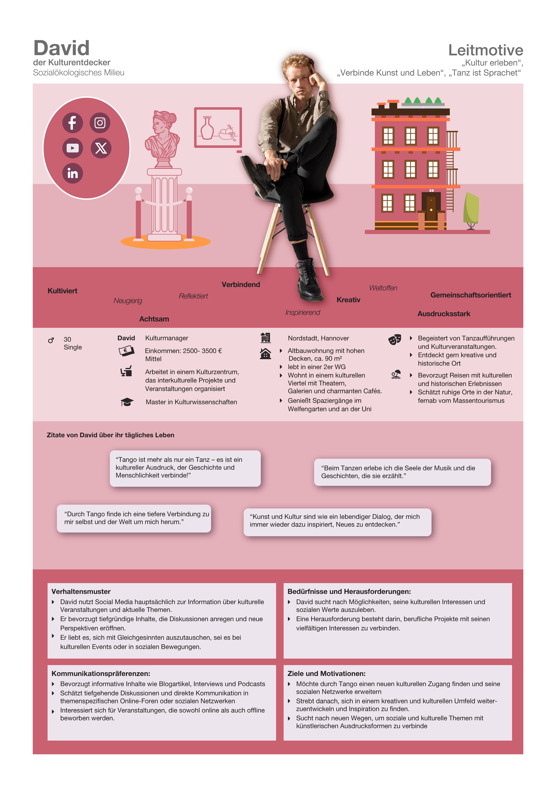
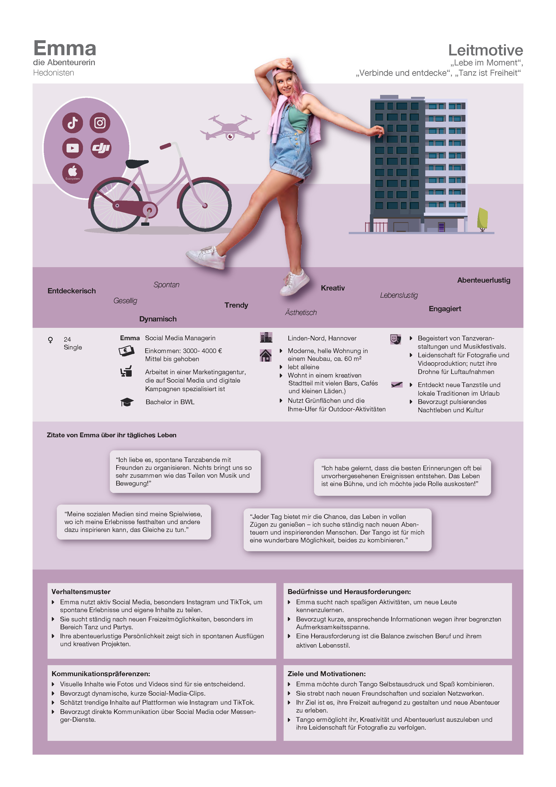

1. Target Audience & Persona Profiles (Main Focus)
Detailed psychographic persona sheets detailing income tiers, housing styles, daily habits, communication preferences, and core motivations mapped against Sinus-Milieu models.

David — Der Kulturentdecker

Emma — Die Abenteurerin
Psychographic persona sheets (Sozialökologisches & Hedonistisches Milieu). Click any persona sheet to enlarge.